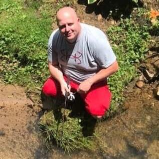

Interests
In my spare time...
As mentioned on my homepage, I am a father to five kids, ranging from ages 2 - 12, so that keeps me pretty busy! Aside from spending time with my family, I enjoy the following activities and hobbies in my spare time:
- My top priority is attending church and church activities.
- I'm an aquarium hobbyist, both freshwater and saltwater.
- I enjoy taking my two dogs, Luna & Zane, for walks.
- I love trout fishing in the local creeks and streams.
- Did I mention, I enjoy coding and learning all I can about web development!?!
